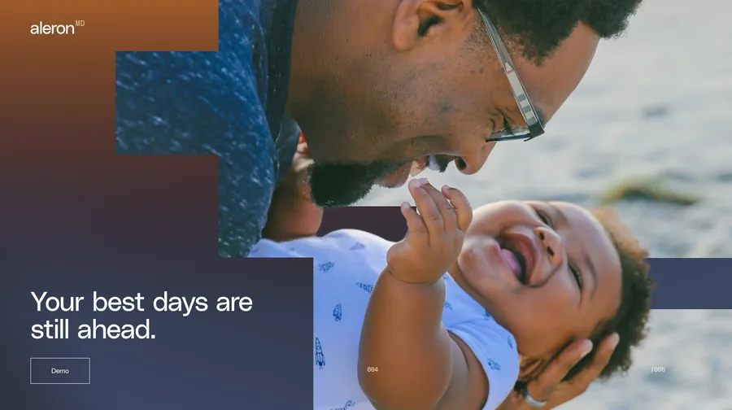
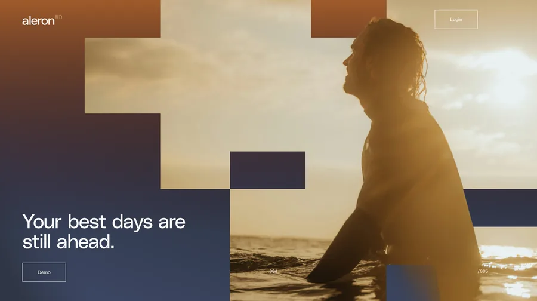
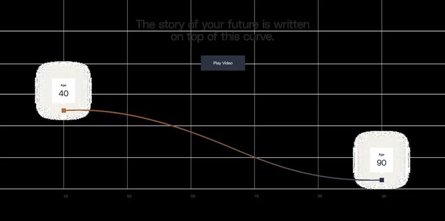

Aleron MD
Lowercase system, not the uppercase branch.
The identity marker is the lowercase white a on a rust-to-navy fade. The design language carries that same idea outward: warm human photography, hard rectangular Figma planes, cream editorial fields, and square-edge clinical UI.


Reference stack
Pull from the landing and Figma, not from memory.
The design-system page uses these source references directly. The full Figma exports remain reference assets; the live UI should still be built in DOM and CSS.



Foundations
Color is quiet until it needs to resolve.
The palette is cream, ink, rust, and navy. The favicon fade is the identity bridge. The curve and Figma blocks use rust-to-navy resolution, not random gradients.
Typography
Editorial, direct, physician-led.
Use the wordmark asset instead of rebuilding the mark by eye. Use Inter Tight for display, Inter for body and UI, Source Serif 4 for controlled warmth, and mono only for source labels or counters.
Components
Primitives inherit the lowercase system.
Buttons, inputs, panels, and tabs use square edges and controlled contrast. No pills, no frosted SaaS chrome, no top-right Apply cluster.
Buttons on light
Buttons on dark
Input
Cream proof field
Faint grid, warm band, rust/navy figure. Keep charts editorial, not dashboard-like.
Icon language
Two colors or it fails.
Icons bridge hard computational structure with warm analog care. They should feel like modular plan symbols, cut-paper apertures, dithered marks, or hatched clinical diagrams. If an icon needs more than two colors to work, it is not part of this system.
Approved
One-color or two-color pictograms, square containers, rust and ink, navy and cream, simple plan symbols.
Rejected
HUD anatomy, transparent bodies, glowing AI networks, dark analytic mysticism, wireframe people, multi-color medical tech icons.
Governance